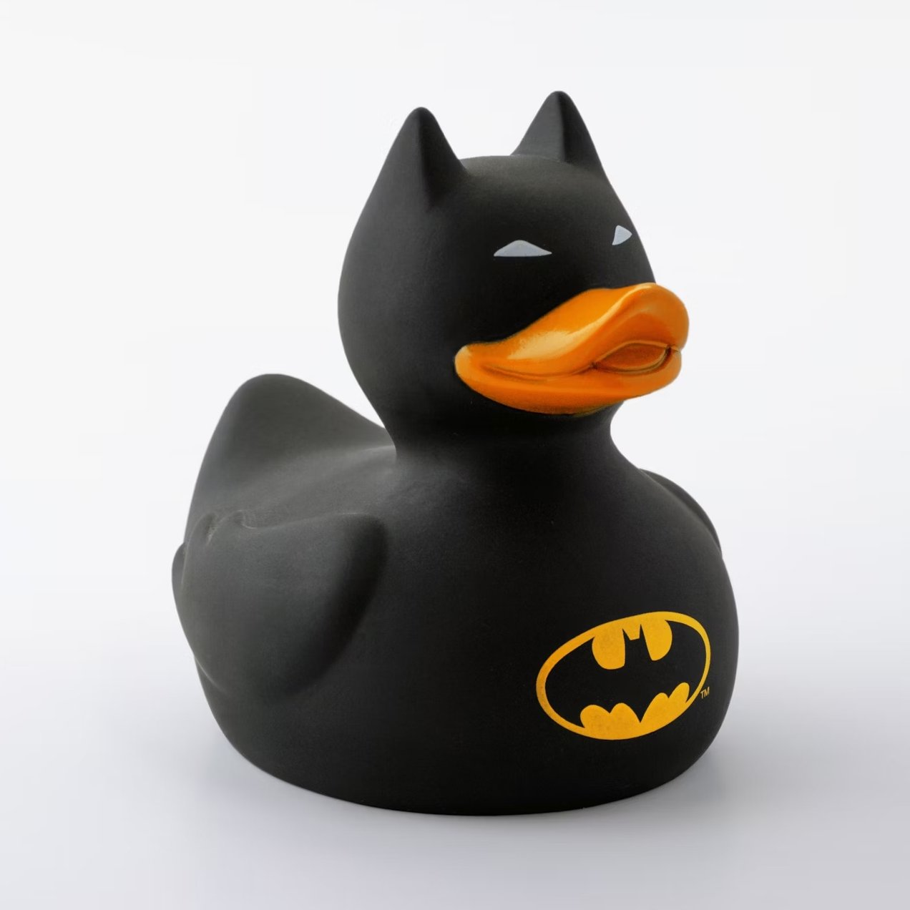

Qué es el rubber duck debugging?
 En ingenería de software, rubber duck debugging o rubberducking (que en español podríamos traducir como método de depuración del patito de goma) es un método de revisión de código. El nombre es una referencia a una historia que aparece en el libro El Programador Pragmático (The Pragmatic Programmer, David Thomas & Andrew Hunt, 1999) en la que un programador toma un patito de goma y revisa su código forzándose a sí mismo a explicarlo, línea por línea, al pato.
Existen otros términos para esta técnica, que a menudo tienen que ver con objetos inanimados (ositos de peluche son un recurdo habitual) pero también con mascotas o, en última instancia, incluso otras personas que no sepan nada sobre programación. La clave es básicamente explicar el problema de programación a alguien que no puede o no sabe comprenderlo: al tratar de describir lo que el código debería estar haciendo y compararlo con lo que está haciendo en realidad, cualquier incongruencia resulta obvia y el programador es capaz de, durante el proceso de explicar el problema, encontrar su solución. En general, enseñar acerca de un tema te fuerza a evaluarlo desde perspectivas distintas y puede llevarte a una comprensión más profunda del mismo.
* El Reto 5 consistía en añadir un título y descripción a la cabecera de la página, para ayudar al SEO. Botón derecho > Inspeccionar o Botón derecho > ver código fuente para ver detalles